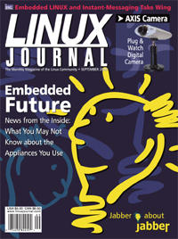

Shutdown Archive web server
Search:
Linux Journal
Issue #77/September 2000

Features
The Axis 2100 Network Camera
by Jason Schumaker
It's a video camera. It's a web server. It runs Linux!
The Next Bang: The Explosive Combination of Embedded Linux, XML and Instant Messaging
by Doc Searls
Interview with Google's Sergey Brin
by Jason Schumaker
VoIP and Embedded Linux
An Interview with Inder Singh
by Jason Schumaker and Don Marti
Indepth
Advanced 3-D Graphics: GNU Maverik—a VR Micro-Kernel
by Adrian West
GNU Maverik system
The Puzzle of 3D Graphics on Linux
by John Matthews and Daryll Strauss
From OpenGL to DRI to DGA, each term refers to a particular part of the full scene of Linux graphics.
Linux Job Scheduling
by Michael A. Schwarz
The Long View on Linux
by Doc Searls
Interview with Andrew Leyden—CEO of PenguinRadio
by Jason Schumaker
PenguinRadio is working to bring the power of the internet to home stereos and—down the road—to car stereos, as well.
Compaq's Approach to Linux in Your Hand
Toolbox
Linux Means Business
Linux in Embedded Industrial Applications: A Case Study
by Luca Fini
Kernel Korner
The Bullet Points: Linux 2.4 - Part Deux
by Joe Pranevich
At the Forge
Content Management
by Reuven M. Lerner
Cooking with Linux
The Ghost of Fun Times Past
by Marcel Gagné
Columns
Linley on Linux Yopy Puts Linux in Hand
The author writes about Yopy, the first handheld computer that runs Linux.
by Linley Gwennap
Linux in Education: Linux at the University
In outer space, on the ground, and in the classroom: an overview of several exciting real-world applications developed under Linux by students and researchers at the University of Colorado in Boulder.
by Kevin K. Gifford
Focus on Software
by David A. Bandel
Embedded Systems News
by Rick Lehrbaum
The Last Word
by Stan Kelly-Bootle
Reviews
TimeSys Linux/RT (Professional Edition)
by Daniel Lazenby
Linux Programmer's Reference Second Edition
by Ibrahim F. Haddad
Python and Tkinter Programming
by Phil Hughes
sendmail for Linux
by Russell J.T. Dyer
Departments
Letters
upFRONT
From the Editor
Embedded Systems
by Don Marti
From the Publisher
Staff Changes and an Activism Request
by Phil Hughes
Linux for Suits
Still Searching
by Doc Searls
Best of Technical Support
New Products
Archive Index
Shutdown Archive web server
Search:
Copyright © 1994 - 2018
Linux Journal
. All rights reserved.